2016年四季度居民消费价格预期调查报告
参加四季度问卷调查的专家学者300余人，收回有效问卷261份，绝大多数人对居民消费价格总水平、主副食品价格均持稳中缓升的预期，其中缓和上涨预期占据主导。与上期相比，四季度居民消费价格总水平上涨预期小幅上升，看平和下降的预期均有所下降；与去年同期相比，居民消费价格总水平预期基本没有变化。四季度主副食品价格预期与往年同期有所不同，上涨预期较上期略有回落，看平预期有所增加。商品房价格方面，随着9月底及10月初住房限购、限贷新政的密集出台，房地产市场过热城市的商品房价格过快上涨势头将得到遏制。
一、居民消费价格总水平预期继续保持稳中缓升，其中以缓和上涨为主
与三季度相比，预计2016年四季度居民消费价格总水平上涨183人，占比70.12%，其中预计缓和上涨158人，明显上涨25人，分别占86.34%、13.66%；预计基本持平74人，占比28.35%；预计有所下降4人，占比1.53%；无人预计明显下降。
调查结果显示，预计居民消费价格总水平上涨的人数达七成，其中接近九成的人预计缓和上涨；预计平稳的人数近三成。绝大部分的人预计居民消费价格总水平呈稳中缓升态势。
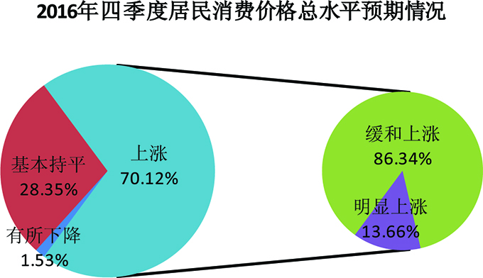
从居民消费价格总水平预期走势图看，四季度（本期）居民消费价格总水平预期和往年同期一致，上涨预期较上期小幅上升，比上期的60%增加了10.12个百分点；和去年同期69.03%的上涨预期相比，本期基本没有变化，略增1.09个百分点。
与上涨预期走势不同，本期居民消费价格总水平基本持平的预期较上期的34.17%有所回落，减少了5.82个百分点；与去年同期的27.74%相比，本期基本没有变化，略增0.61个百分点。
与上期4.58%的人预计居民消费价格总水平下降相比，本期继续回落，减少了3.05个百分点；与去年同期的2.58%相比，本期减少1.05个百分点，继续保持极低占比。
调查表明，与上期相比，本期绝大部分人继续保持居民消费价格总水平稳中缓升的预期，其中预计上涨的人数小幅增加，看平人数有所减少；与去年同期相比，居民消费价格总水平预期基本没有变化。
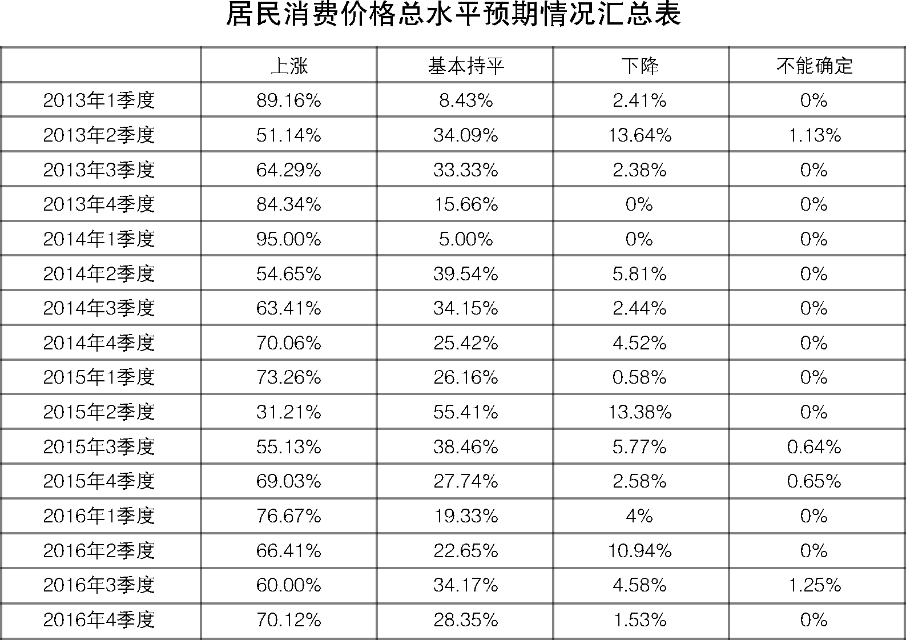
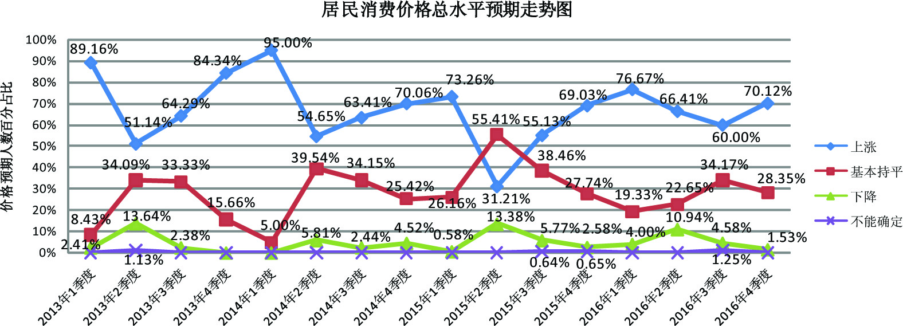
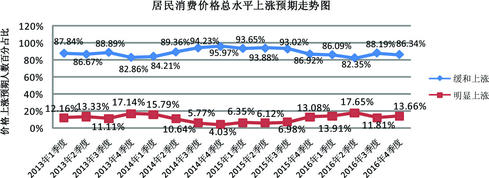
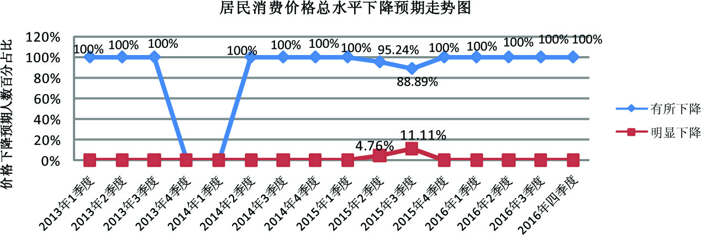
二、主副食品价格预期继续保持稳中有升，缓和上涨预期占据主导
与三季度相比，预期2016年四季度主副食品价格上涨159人，占比60.92%，其中预计缓和上涨139人，明显上涨20人，分别占87.43%、12.57%；预计基本持平90人，占比34.48%；预计有所下降11人，占比4.22%；不能确定1人，占比0.38%；无人预期明显下降。
调查结果显示，达六成的人预计主副食品价格上涨，其中近九成的人预计缓和上涨；看平人数超过三成。绝大部分的人预计主副食品价格稳中缓升。
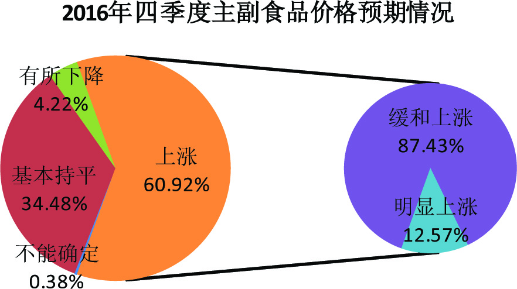
从主副食品价格预期走势图看，四季度（本期）主副食品价格预期走势与往期及居民消费价格总水平走势有所不同，主副食品价格上涨的预期较上期有所回落，看平的预期继续上升。
与上期64.58%的人预计主副食品价格上涨相比，本期减少3.66个百分点，低于居民消费价格总水平上涨预期9.2个百分点；与去年同期77.42%的上涨预期相比，本期减少了16.5个百分点。
与上期27.92%的人预计主副食品价格基本持平相比，本期增加6.56个百分点，高于居民消费价格总水平看平预期6.13个百分点；与去年同期的20%相比，本期大幅上升，增加了14.48个百分点。
主副食品价格下降的预期继续保持极低位占比，与上期的7.5%相比，本期继续回落，减少了3.28个百分点；与去年同期的1.93%相比，本期增加2.29个百分点。
调查表明，本期绝大多数的人继续保持主副食品价格稳中缓升的预期。但与往年同期主副食品价格上涨预期继续上升不同，本期主副食品价格上涨的预期较上期出现回落，而保持平稳的预期则上升。与居民消费价格总水平预期相比，本期主副食品价格虽仍以上涨预期为主，但上涨预期低于居民消费价格总水平约十个百分点，看平预则稍高于居民消费价格总水平。这与近期粮食价格平稳，猪肉价格下跌，进一步强化了主副食品价格趋稳的预期有关。
关于大米、食用油和猪肉价格预期情况。本期预计大米价格上涨58人，占比22.22%，其中缓和上涨55人，明显上涨3人，分别占94.82%、5.18%；基本持平183人，占比70.12%；有所下降20人，占比7.66%；无人预计明显下降。预计食用油价格上涨78人，占比29.89%，其中缓和上涨74人，明显上涨4人，分别占94.88%、5.12%；基本持平167人，占比63.98%；有所下降15人，占比5.75%；不能确定1人，占比0.38%；无人预计明显下降。预计猪肉价格上涨145人，占比55.56%，其中缓和上涨116人，明显上涨29人，分别占80%、20%；基本持平80人，占比30.65%；有所下降32人，占比12.26%；明显下降1人，不能确定3人，分别占0.38%、1.15%。
调查结果显示：与上期相比，本期大米和食用油价格继续以平稳预期为主，其中大米价格看平人数约七成，食用油价格看平人数超过六成，均远高于上涨预期。本期猪肉价格上涨预期基本没有变化，超过半数，看平预期有所上升。近期虽然猪肉价格进入周期性下降阶段，但随着年底及节日消费到来，大部分专家预计四季度猪肉价格呈现稳中缓涨。
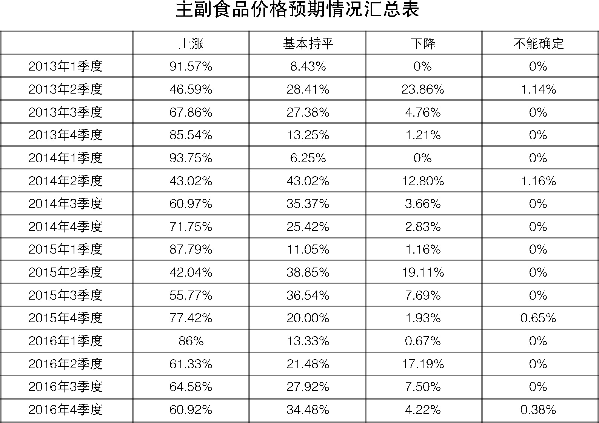
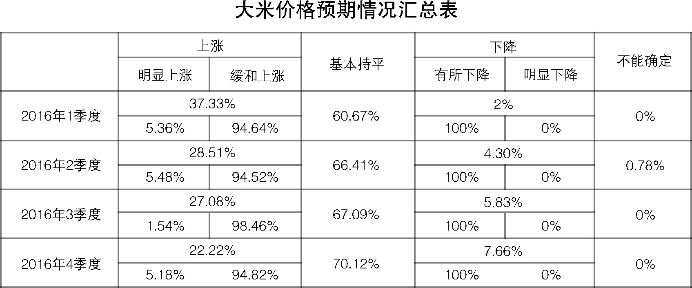
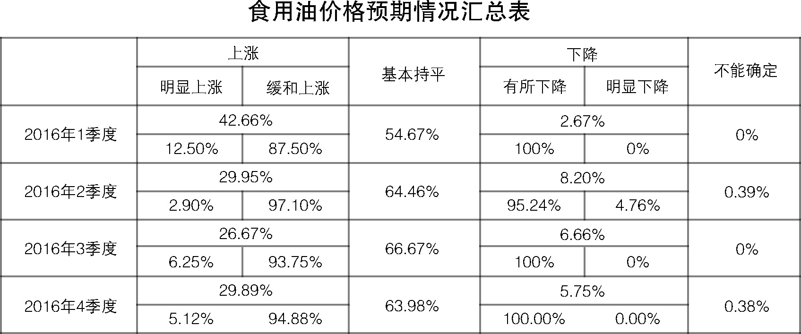
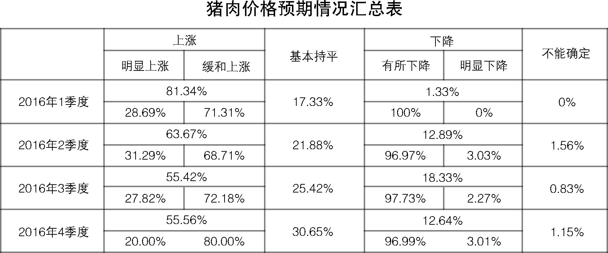
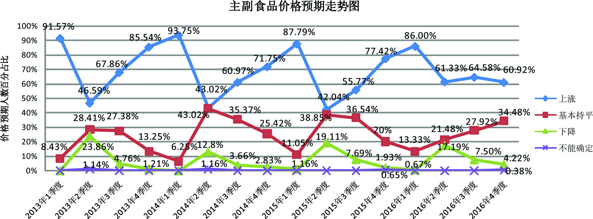
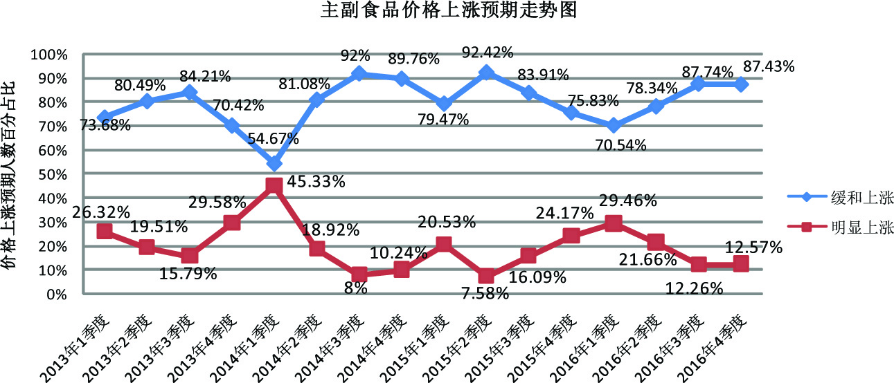
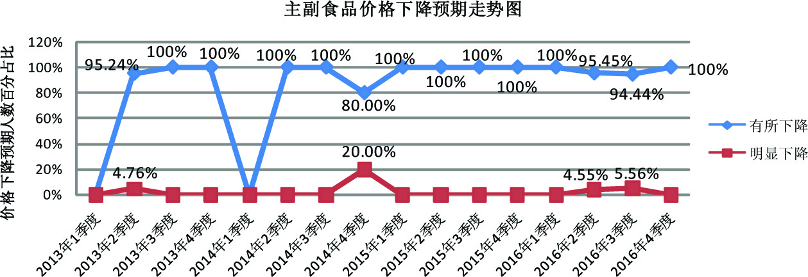
三、受调控政策影响，商品房价格过快上涨将得到有效控制
此次商品房价格预期调查，是在政府出台限购令之前就已开展。从调查情况看，与三季度相比，预计2016年四季度商品房总体价格上涨209人，占比80.08%，其中预计缓和上涨147人，明显上涨62人，分别占70.34%、29.66%；预计总体价格基本持平36人，占比13.79%；预计总体价格有所下降10人，占比3.83%；不能确定6人，占比2.3%；无人预计明显下降。四季度商品房总体价格预期呈上升趋势，并以缓和上涨为主。
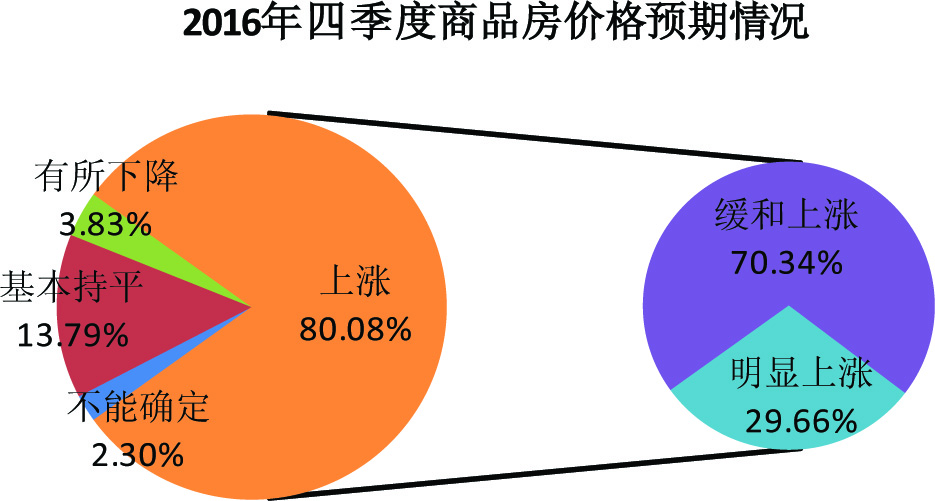
与上期相比，四季度商品房价格上涨预期增长约十个百分点，看平预期减少十多个百分点。这表明，在房地产调控政策收紧前，房地产市场过热、房价上涨过快，导致了对商品房价格上涨的预期进一步增强。从商品房价格预期走势图可以看出，从去年三季度以来，南京、苏州等部分城市商品房价格呈现出过快上涨态势，期间虽然地方政府出台了商品房稳控政策，部分月份商品房价格也有所回落，但很快又出现反弹，商品房市场持续走热。
九月底到十月初，房价过快上涨的热点城市相继密集出台了限购、限贷政策，加码调控力度。从近期市场情况看，这些地区的商品房市场交易量大幅下降，价格过快上涨的势头也得到有效控制。
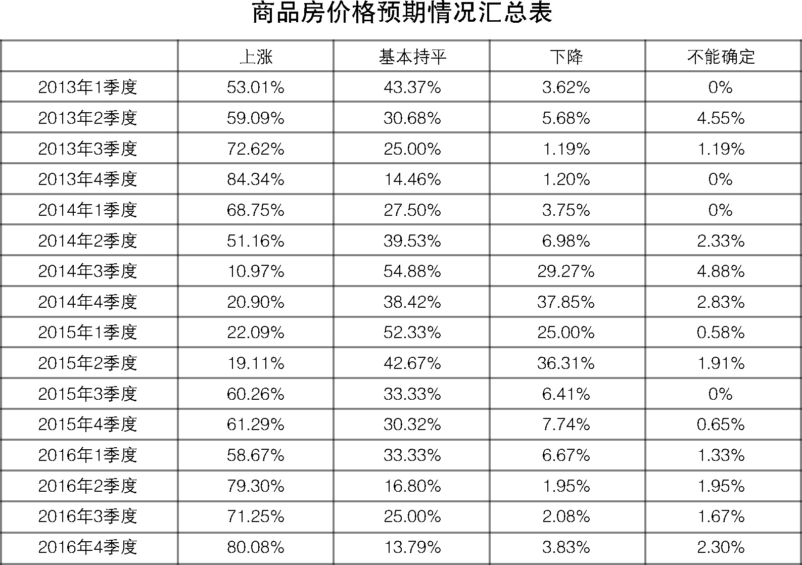
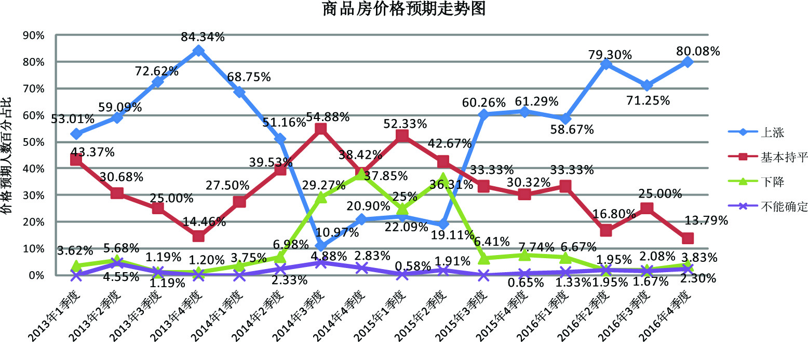
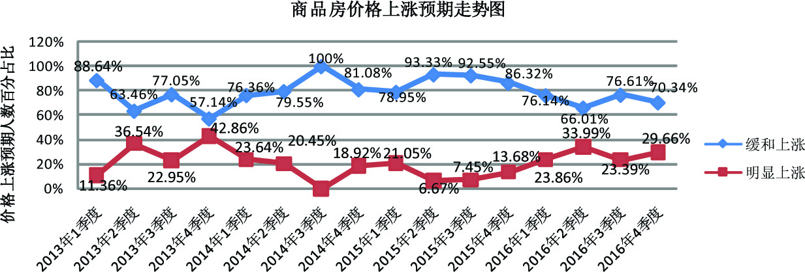
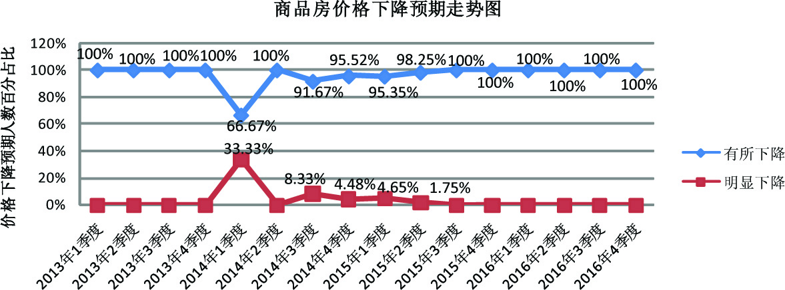
江苏省物价局-江苏省物价局网站
二○一六年十月